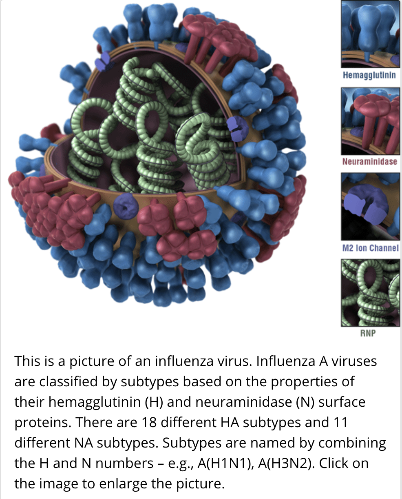

Flu is a contagious respiratory illness caused by influenza viruses that infect the nose, throat, and sometimes the lungs. It can cause mild to severe illness, and at times can lead to death. The best way to prevent flu is by getting a flu vaccine each year.
Flu is a contagious respiratory illness caused by influenza viruses that infect the nose, throat, and sometimes the lungs. It can cause mild to severe illness, and at times can lead to death. The best way to prevent flu is by getting a flu vaccine each year.
season occurs in the Fall and Winter. While influenza viruses circulate year-round, most of the time flu activity peaks between December and February, but activity can last as late as May. The overall health impact (e.g., infections, hospitalizations, and deaths) of a flu season varies from season to season. CDC collects, compiles, and analyzes information on influenza activity year-round in the United States and produces FluView, a weekly surveillance report, and FluView Interactive, which allows for more in-depth exploration of influenza surveillance data. The Weekly U.S. Influenza Summary Update is updated each week from October through May.
There are two main types of influenza(flu) virus: Types A and B. The influenza A and B viruses that routinely spread in people (human influenza viruses) are responsible for seasonal flu epidemics each year. Influenza A viruses can be broken down into sub-types depending on the genes that make up the surface proteins. Over the course of a flu season, different types (A & B) and subtypes (influenza A) of influenza circulate and cause illness.
